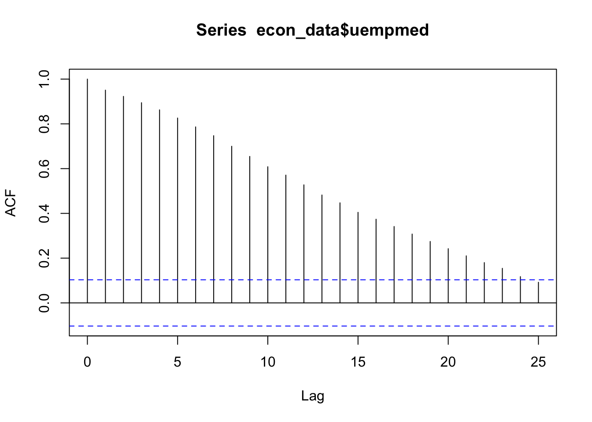

Chapter 6 Forecasting
So, we’ve got a time series dataset… but what is a reasonable forecast for how it might behave in the future?
Sure we can build a confidence interval (as we learned in the previous chapter) and figure out a reasonable value - but what about forecasting for multiple periods into the future?
That’s where we need to build models. Let’s load in some packages.
# Load in required packages
library(tidyverse) # Includes ggplot2, dplyr, purrr, stringr, etc.
library(ggridges) # For ridge plots
library(forecast) # Time series forecasting
library(ggrepel) # For better text label placement
library(viridis) # Color scales
library(readxl) # Excel file reading
library(lubridate) # Date and time manipulation
library(gapminder) # Gapminder data for examples
library(ggalt) # Additional ggplot2 geoms
library(scales) # Scale functions for ggplot2We’ll start with some pre-loaded time series data. The ggplot2 package includes a data set called ‘economics’ that contains US economic indicators from the 1960’s to 2015.
econ_data <- economics %>% dplyr::select(c("date", "uempmed"))
econ_data <- econ_data %>% dplyr::filter((date >= as.Date("1970-01-01")
& date <= as.Date("1999-12-31")))As a side note: We can also get Australian unemployment rate data using the readrba function.
Let’s plot the US data to see what we are working with.
ggplot(econ_data) +
geom_point(aes(x = date, y = uempmed), col = "grey", alpha = 0.5) +
geom_smooth(aes(x = date, y = uempmed), col = "blue") +
labs(title = "Unemployment rate",
caption = "Data: ggplot2::economics",
x = "",
y = "") +
theme_minimal() +
theme(
plot.title = element_text(face = "bold", size = 12, margin = margin(0, 0, 25, 0)),
plot.subtitle = element_text(size = 11),
plot.caption = element_text(size = 8),
axis.text = element_text(size = 8),
axis.title.y = element_text(margin = margin(t = 0, r = 3, b = 0, l = 0)),
axis.text.y = element_text(vjust = -0.5, margin = margin(l = 20, r = -10)),
axis.line.x = element_line(colour = "black", size = 0.4),
axis.ticks.x = element_line(colour = "black", size = 0.4),
panel.grid.minor = element_blank(),
panel.grid.major.x = element_blank(),
legend.position = "bottom"
)6.1 ARIMA models
AutoRegressive Integrated Moving Average (ARIMA) models are a handy tool to have in the toolbox. An ARIMA model describes where Yt depends on its own lags. A moving average (MA only) model is one where Yt depends only on the lagged forecast errors. We combine these together (technically we integrate them) and get ARIMA.
When working with ARIMAs, we need to ‘difference’ our series to make it stationary.
We check if it is stationary using the augmented Dickey-Fuller test. The null hypothesis assumes that the series is non-stationary. A series is said to be stationary when its mean, variance, and autocovariance don’t change much over time.
# Test for stationarity
aTSA::adf.test(econ_data$uempmed)
# See the auto correlation
acf(econ_data$uempmed)
# Take the first differences of the series
econ_data <- econ_data %>% mutate(diff = uempmed - lag(uempmed))
# Plot the first differences
ggplot(econ_data, aes(x = date, y = diff)) +
geom_point(col = "grey", alpha = 0.5) +
geom_smooth(col = "blue") +
labs(
title = "1st Difference (Unemployment Rate)",
caption = "Data: ggplot2::economics",
x = "",
y = ""
) +
theme_minimal() +
theme(
legend.position = "bottom",
plot.title = element_text(face = "bold", size = 12, margin = margin(0, 0, 25, 0)),
plot.subtitle = element_text(size = 11),
plot.caption = element_text(size = 8),
axis.text = element_text(size = 8),
axis.title.y = element_text(margin = margin(t = 0, r = 3, b = 0, l = 0)),
axis.text.y = element_text(vjust = -0.5, margin = margin(l = 20, r = -10)),
axis.line.x = element_line(colour = "black", size = 0.4),
axis.ticks.x = element_line(colour = "black", size = 0.4),
panel.grid.minor = element_blank(),
panel.grid.major.x = element_blank()
)